SAFARI
Users
History
Working with Spices
- buying, storing, roasting, grindingDried Spices
- Mostly seedsFresh Spices
- Mostly rootsLinks
- to other spice sites
History
Most of our well known spices are grown in tropical coastal regions of India and Southeast Asia, but a few are from the tropics of the Americas. From ancient times, spices have been a major article of trade to Europe and the Mediterranean region. The trade was long controlled by Arab and Venetian monopolies, making spices absurdly expensive.
Medieval recipes call for many spices but fail to give any quantities. These recipes were written for professional cooks who learned how much in their apprenticeship. Many writers presume these spices were used with a heavy hand. Others say the many spices may have been used judiciously in sophisticated mixes, as it is done in India. Unfortunately, amounts recorded in trade records, divided by the number of people who could actually afford spices, indicates a heavy hand.
Many writers claim that the heavy hand with spices was to hide the taint of spoiled meats. This is certainly false. Given the very detailed instructions to staff on daily shopping that have come down to us, it is clear those who could afford spices were not eating spoiled meat - and those who had to eat spoiled meat could not afford spices that cost more than the meat.
The reason spices were used with a heavy hand is simple. They were very costly, so using lots of spices was a display of wealth and prestige.
The high cost of spices was a major factor in European development of the highly sophisticated sailing ship technology that made world conquest and the colonial era possible. Ironically, these ships were so efficient and so effective at breaking the trade monopolies, the cost of spices plunged. As costs plunged, so did usage - they were no longer a display of wealth when everyone could afford them. Today, most European countries use few spices, and little of those they do use. The only one still costly is labor intensive saffron.
Today, every time our government is thrown out of a country it invaded or has been meddling in, all the collaborators move to Los Angeles and many open restaurants. Naturally, they send home for ingredients as soon as they can. Specialty markets are soon opened and new crops are planted on farms. The happy result is that nearly every spice used in the world is available here in Southern California.
Working with Spices
Buying Storing & Preparing Spices
The most important factor in successful spice usage is freshness. Flavor depends on oils which will evaporate and/or turn rancid in time. This process is accelerated by many times when the spice is ground.
 The best place to buy spices is from an ethnic grocer or importer who
services a large community that uses those spices. Supermarket spices
may have been years getting to you. Comparing ground turmeric from your
local supermarket with that from an Indian market will be a revelation.
The best place to buy spices is from an ethnic grocer or importer who
services a large community that uses those spices. Supermarket spices
may have been years getting to you. Comparing ground turmeric from your
local supermarket with that from an Indian market will be a revelation.
Since ground spices degrade so rapidly it is better to buy them whole and grind as needed.A small whirling blade coffee grinder does a remarkable job of grinding spices in just seconds. Gun it a few times, then turn it upside down and whack it with the palm of your hand to shake the spice into the lid.
Store spices, whole or ground, in tightly sealed containers in a cool dark place. Direct sunlight is very destructive to spices. Buy in quantities that will be used up in about a year for whole spices, 6 months or less for ground.
Black pepper declines very rapidly after grinding but is used so frequently I don't want to grind it every time. I grind a tablespoon or so every week and keep it in one of those ultra-tiny "must be good for something" gift basket jam jars, to be spooned out as needed.
Roasting Spices
 Particularly in India and Southeast Asia, but also in North Africa and
other regions, spices are prepared for grinding into spice mixtures by
dry roasting. The Indian tava (also used for making flatbread)
is the traditional pan for this. It is slightly concave and works great
on a clay stove or over a bucket of charcoal, but it doesn't work on our
gas burners or electric elements. The absolutely perfect pan to use is
the Lodge L90G3 10" round griddle. Both items are shown in the photo,
though our wood handled tava is a bit "upscale" compared to the pounded
disk of sheet iron you'd find in an average Indian household.
Particularly in India and Southeast Asia, but also in North Africa and
other regions, spices are prepared for grinding into spice mixtures by
dry roasting. The Indian tava (also used for making flatbread)
is the traditional pan for this. It is slightly concave and works great
on a clay stove or over a bucket of charcoal, but it doesn't work on our
gas burners or electric elements. The absolutely perfect pan to use is
the Lodge L90G3 10" round griddle. Both items are shown in the photo,
though our wood handled tava is a bit "upscale" compared to the pounded
disk of sheet iron you'd find in an average Indian household.
When roasting spices, do them one at a time because their timing is so different. Of course, in India, experienced cooks know the order and timing by which to add them to the pan so they are all done at once, but you probably don't have that level of experience.
Heat them over high heat stirring and shaking the pan frequently
until they start releasing their characteristic fragrance and start to
darken just a touch, then pour them out onto a plate to cool well before
grinding. I always start with cumin since it is so distinctive it'll let
me know when the pan is hot enough for the others. I also do all this
before handling dried chilis or I may not be able to smell anything at
all.
Dried Spices
Achiote / Annatto
[Bijol; Bija (Caribbean); recado rojo (Mexico); Atsuete (Philippines) Pimentão doce (Spanish); Bixa orellana]
Seeds of he Achiote shrub, probably native to Brazil, have a pleasant but subtle aroma and flavor, but it is for their color they are most widely used. Aside from ethnic cuisines, the intense red-orange pigment, annatto (E160b), is used to color cheddar cheese, margarine, smoked fish, custard powder and other foods. It includes two pigments, one oil soluble which is more red, and one water soluble which is more yellow. The photo shows seeds (about 0.2 inch long) and oil extracted color.
The seeds are used in cooking in the Philippines, Mexico, Central
America, the Caribbean and northeastern parts of South America. Seeds,
Leaves and other parts are used medicinally for a number of conditions.
Sap from the (inedible) fruits is used to treat type 2 diabetes and fungal
infections. The red pigment has long been used by tropical American Indians
as body paint and hair dye.
Details and Cooking.
Ajwain
[Ajowan, Carom seed, Bishop's weed, Ajowan caraway; Vaamu (Telugu - India), Omam (Tamil - India); Nech azmud (Ethiopia); Trachyspermum ammi]
This member of the Parsley family is native to India, Pakistan
and the Near East, and is used as a spice through the region. It has a
flavor much like thyme, because, like thyme, it contains thymol. It is
stronger than thyme and needs to be used with discretion. In India it is
considered helpful to digestion, and often included in dishes thought
hard to digest. The part used is the dried fruits, which contain the
seeds. The photo specimens (whole fruits) were quite small, typically
0.122 inch long by 0.033 inch wide (3.0 x 0.8 mm).
Allspice
 [Jamaica pepper, Myrtle pepper; Pimenta, Pimento (Spanish); English pepper
(Hebrew); Pimenta dioica of family Myrtaceae]
[Jamaica pepper, Myrtle pepper; Pimenta, Pimento (Spanish); English pepper
(Hebrew); Pimenta dioica of family Myrtaceae]
Native to the Caribbean, southern Mexico and Central America, this spice is produced by a tree that can grow to 60 feet tall. The name comes from the English, who thought the dried fruits tasted like a combination of cinnamon, nutmeg and cloves. The tree has now been planted in tropical climates around the world. Allspice is very important in Caribbean cuisine, and has been enthusiastically adopted in the Levant. In Germany it is used in sausages.
This spice should always be bought as whole dried fruits, as it declines
rapidly if ground. It is soft and easily ground. In the growing region the
leaves are also used as a flavoring, but they become worthless when dried,
so are not a commercial item. The photo specimens vary considerably in size,
with the largest 0.330 inch diameter and the smallest 0.227 inch diameter
(8.4 to 5.8 mm).
Amchur
[Amchur powder, Green Mango; Mangifera indica]
This is a popular souring agent in India, particularly in dry regions
where lemons and limes cannot be had. Being dry it has the advantage of
being easily stored and transported. Called for by many recipes from
northern India, it is very sour with a slight sweetness and just a bit
resinous. Use it for marinades where it has the same tenderizing effect
as lemon juice (1 teaspoon amchur powder is equivalent to 3 tablespoons
lemon juice) and in curries. It is available both in powdered
form as shown, and as dried chunks of mango. It is available in markets
serving an Indian community.
Anise
 [Nketenkete, Osukone (Ghana); Pimpinella anisum]
[Nketenkete, Osukone (Ghana); Pimpinella anisum]
The fruits of this potent member of the parsley family are used to provide a "licorice" flavor to many drinks and candies, though it is unrelated to the root from which "true licorice" is obtained. In the U.S. anise is used mostly in cookies and other baked goods while the related but less "licoricy" fennel fruits are used more for cooking.
The bulbs and fronds sold as "Anise" or "Sweet Anise" in the groceries
are actually Fennel. See also
Star Anise for another unrelated spice
with a similar flavor. Anise fades rapidly if ground so you should keep
whole "seeds" (actually a dried fruit) and grind them as needed.
Asafoetida
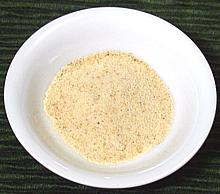 [Hing (india), Ferula assa-foetida (Parsley family)]
Dried sap from roots of this parsley family herb native to Central Asia was used in Europe from the time Alexander until the 16th century. It was important in Roman cuisine as a substitute for Silphium which was very expensive. It is still much used in India, particularly as a substitute for onions and garlic by Indian Brahmins for whom those are forbidden. The flavor is not the same but it adds a similar sophistication. Asafoetida is used mainly with vegetable dishes but it can also add an interesting flavor to meat.
Food writers have struggled to describe the foul smell of the raw resin - struggled because food writers aren't familiar with SAE 90W hypoid gear oil which contains similar sulphur compounds. Fortunately the odor is subdued by cooking. This product is sold in two versions, pure resin (which may be in powdered form) and Hing powder, which has powdered resin cut with rice flour and other substances. I strongly recommend the pure resin.
Asafoetida resin must be fried in hot oil briefly before other
ingredients are added to the pan. For pure resin powder this is just a couple
of seconds but will be a little more for coarser resin. Hing powder is
supposed to not need this step but I disagree.
Details and Cooking.
Ataiko
[Otaiko, Atariko, Rohojie, Rohoji, Rigije, Orima; Aframomum subsericeum
Native to Nigeria and Cameroon, and south into D.R. Congo, this plant is
of the Ginger family. Its seeds are used as a spice in soups in Nigeria,
particularly Banga (Palm) and Pepper soups. These seeds taste similar to
Green Cardamom seeds but the flavor is not as bright. The photo specimens
were about 0.075 inch diameter and 0.210 inch long (2 x 5.3 mm). They were
purchased from a US vendor of West African foods for 2021 US $4.87 per ounce.
Calabash Nutmeg / Ehuru

[Jamaican Nutmeg; African Nutmeg; Ehu, Ehuru (Igbo); Ariwo (Yoruba); Iwo (Erhe); Awerewa, Ehiri, Airama, Muscadier de Calabash, Lubushi; Monodora myristica]
The seeds of this plant were once used as a low cost substitute for
Nutmeg, but use has greatly declined because the price difference is
now the other way around, except for where it grows, mainly West Africa.
Details and Cooking.
Caraway
 [Anethum graveolens]
[Anethum graveolens]
Native to western Asia and Europe the dried fruits of this plant are
used mostly in the cuisines of Central and Northern Europe to flavor bread,
sauerkraut, cheeses, liquors, casseroles and other foods. They also have a
long history of medicinal use. The roots may be cooked as a root vegetable
but are not grown commercially for that purpose.
Caraway, Black
This name generally refers to Nigella - there is no Black Caraway.
Cardamom - Green
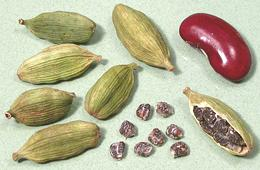 [White Cardamom, True Cardamom; Elaichi (India); Hel (Persia, Hebrew); Hayl (Arabic); Elettaria cardamomum (Ginger Family)]
Green Cardamom is native to India and Malaysia. India produces nearly the
entire world's commercial supply (and consumes most of it). The seeds are
highly aromatic with a sharp brilliant flavor. White cardamom is green that
has been bleached. This is the cardamom to use whenever black is not
specifically called for by name or region. It is the cardamom commonly
available in Europe and North America and used in sweets, coffee and tea
in the Arabic regions, Persia and India.
Details and Cooking.
Cardamom - Black
[Black Cardamom, Brown Cardamom; Kali Elaichi, Moti Elaichi (India); tháo quá (Vietnam); Amomum subulatum (India), Amonum costatum (China) (Ginger family)]
Black Cardamom is not interchangeable with green cardamom. While the green
is sharp and brilliant the black is dark and smoky with high tones of
camphor and mint. It is the cardamom used in China and Vietnam, and in India
it is often included in Garam Masala mixes and certain curries, particularly
in the northern regions.
Details and Cooking.
Cassia Bark
[Cinnamomum cassia (aromaticum)]
An aromatic bark largely interchangeable with (and often confused with) Cinnamon. Cassia is used in China, Southeast Asia and the United States, Cinnamon most other places. See our Cinnamon page for details and how to tell them apart.
Celery Seed
[Apium graveolens var graveolens]
Another aromatic seed from the parsley family, Celery Seed (actually very
tiny fruits) is produced from "Wild Celery" rather than the common Pascal
variety. Much of what is sold as "celery seed" is mixed with or even entirely
Lovage Seed. Apparently lovage is a better
seed producer, but is very closely related to and very similar to wild
celery. Celery seed has been used for thousands of years, both as a flavoring
spice and for its medicianal properties. For details see our
Celery Seed page.
Charnushka
(U.S. Armenian) - Nigella
Chili Peppers
 [genus Capsicum, 30 or more species]
[genus Capsicum, 30 or more species]
An important and prolific member of the Nightshade family (Solanaceae),
chilis produce varieties of fruit that are used as spices, fresh or dried,
and others that are used as vegetables. Originating in Central and South
America, they were spread throughout the world by European traders and are
now essential to many cuisines. They are so diverse and so important we
have a separate (and rather extensive)
Chili Page which breaks further into chilis of specific regions.
Cinnamon
- [Cinnamonum verum (zeylanicum)]Cassia Bark
- [Cinnamomum cassia (aromaticum)]
Cinnamon is native to Sri Lanka (Ceylon) and the Malabar coast of India, but now grown also in the West Indies and South America. Cassia is native to Burma and is grown in China, Vietnam and Indonesia, with Vietnamese (Cinnamomum loureiroi) considered the highest quality. The aromatic bark of both these trees is peeled and dried for use as a spice. The two are easily confused but pretty much interchangeable in recipes.
Shown are long Cinnamon sticks (top), standard U.S. Cassia sticks (center),
broken Cinnamon common in Indian groceries (right) and ground Cinnamon/Cassia
(left). Preference for and availability of these spices is a mater of region.
Cassia predominates in the U.S. but Cinnamon predominates in Mexico.
Cassia is difficult to find in Europe where Cinnamon predominates. China
and Southeast Asia use Cassia almost exclusively, but Cinnamon is used in
India and Sri Lanka. Cinnamon generally has a cleaner, sweeter flavor
and Cassia has a touch of bitterness.
Details and Cooking.
Cloves
[Laung (hindi); Nelke (German); Kanafuru (Hausa); Syzygium aromaticum]
Cloves are flower buds of a myrtle family tree native to Indonesia. To
maximize quality they must be harvested just before opening into flowers,
and then immediately dried. Cloves have been in great demand in Europe since
the Roman Empire and were very expensive considering they had to come all the
way from Indonesia. They were not grown elsewhere until recently. Despite
demand abroad, cloves have never been an important spice in Indonesia,
where the major use is in cigarettes.
Coriander Seed
[Dhania (India); Coriandrum sativum]
These "seeds" are actually dried fruits containing the seeds. While not
now used in Europe to anywhere near the extent they were in Medieval times,
coriander seeds are still used in pickling and sausage making. In India they
are used in vast quantity for all manner of curries and spice mixtures,
almost always with Cumin at a ratio of about 1 T Coriander to 1 t cumin.
This combination was also popular in Imperial Rome and is used in Africa
and the Middle East. Coriander seeds from India are larger and lighter than
those from Europe. Coriander greens, known here as Cilantro, are also a major
food flavoring. The photo specimens, from India, were typically 0.140 inch
diameter (3.6 mm).
Details and Cooking.
Cumin
 [Jera (India); Cuminum cyminum | Blackseed, Black
Caraway; Kala Jeera, Black Cumin (India); Shahi zeera (Hindi)
Bunium bulbocastanum]
[Jera (India); Cuminum cyminum | Blackseed, Black
Caraway; Kala Jeera, Black Cumin (India); Shahi zeera (Hindi)
Bunium bulbocastanum]
Cumin is another member of the aromatic parsley family. What are called
"cumin seeds" are actually the dried fruit, and they contain the seeds.
White Cumin is the regular cumin. The term "white" is
sometimes used in India to specifically differentiate it from Black
Cumin. The photo specimens were typically 0.188 inch long by 0.060 inch
wide (4.8 x 1.5 mm). For details see our
Cumin page.
Black Cumin [Kala Jeera] is a cumin relative
(different genus) used for some particular spicings in northern India,
Pakistan, Bangladesh, Afghanistan, Tajikistan and Iran. The seeds are
much smaller than white cumin and the flavor much more aromatic (and the
cost much higher). These seeds are generally not ground. Substituting
with White Cumin is distinctly imperfect. The photo specimens were
typically 0.220 inch long by 0.020 wide (5.6 x 0.5 mm). For details
see our Cumin page.
Black Cumin
[Kalojira (Bengali only, otherwise improper)] See Cumin for correct usage outside Bengal, and Nigella for what is actually meant in Bengali.
Dagad Phool
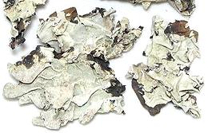 [Black Stone Flower; Dagad Phool (Marathi); Kalpasi, Kallupachi, Phathar Ka Phool (Tamil); Riham karmani (Urdu); Kalahu (Kannada); Shaileyam (Sanskrit); Dagar da Phool (Punjabi); Patthar ke phool (Hindi); Bojhwar, Chadila, (northern India); Parmelia perlata of family Parmeliaceae]
This lichen is considered essential for making Goda Masala, a curry
powder used in the Marathi cuisine of Maharashtra, Goa and Karnataka. Its
earthy flavor is considered very important to the cuisine of that region,
but it is used to some extent in other regions, particularly Chettinad
(in Tamil Nadu) and Hyderabad (in Telangana). For details see our
Dagad Phool page.
Fennel
[Fennel; Foeniculum vulgare | Lucknow Fennel; Foeniculum vulgare (Parsley family)]
Native to the coastal regions of the Mediterranean, Fennel is unusual in being used not only a spice (dried fruits) and as an herb (leaves) but also as a vegetable (swollen stem bases). It grows easily in any temperate climate and is grown throughout the world, often becoming a weed. The yellow-beige fruits (left in photo) are now used as a dried spice through most of the world, especially for flavoring fish and meat, soups, sweets, drinks and curries. The fruits are similar to Anise but notably sweeter. The variety of fennel used for spice is not the same variety used as a vegetable but they are closely related. The photo specimens were typically 0.285 inch long by 0.080 inch wide (7.2 x 2 mm). Details and Cooking.
Lucknow Fennel, to the right in the photo, is a variety grown in northern India. It has much smaller seeds with an even sweeter more aromatic licorice flavor. This fennel is called for in many dishes originating in northern India and can be found in Indian markets (at a much higher price than regular fennel). The photo specimens were typically 0.233 inch long by 0.063 inch wide (5.9 x 1.6 mm).
Fenugreek
[Methi, Trigonella foenum-graecum (Bean family)]
This bitter aromatic bean, tiny and angular compared to common beans,
is used extensively in India, where it is generally roasted to bring out
the flavors before grinding for spice mixes like garam masala. It is
also used in Greece, the Near East, Persia and Southeast Asia.
Fenugreek Leaves are also used as a slightly bitter fresh herb in the
cooking of Persia, parts of India and the Near East, and as a dried
herb in Georgia. In North America, seeds are used as a flavoring to make
imitation maple syrup. The photo specimens were typically 0.170 inch
long by 0.105 inch wide (4.3 x 2.7 mm).
Details and Cooking.
Ginger - Ground

This spice is made from ground dried ginger rhizomes (see our
Ginger page). It is NOT
substitutable with fresh ginger - in either direction. The flavors of
the two forms are very different. Dried ginger is used in North America
mainly in baked goods. It is used in India as an ingredient in dry
masalas (spice mixes).
Golpar
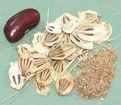 [Golpar (Persia); Angelica (English, Spanish, French (misnamed)); Persian Hogweed (English); Tromsø palm (Norway); Heracleum persicum]
The dried fruits of the Golpar plant are ground to a coarse powder much
used in Persian (Iranian) cuisine, especially for sprinkling on cucumbers,
pomegranate seeds, cooked vegetables, broad beans, lentils and the like. It
is also used in soups and stews and when cooking beans, and is mixed with
vinegar as a dip, As a sprinkle, it may be used alone or combined with an
equal amount of salt (golpar namac). See
Details and Cooking.
Grains of Paradise
[Melegueta pepper, Alligator pepper, Guinea pepper, Guinea grains, Aframomum melegueta - related Atzoh, Mbongo (West Africa); Aframomum citratum (Ginger family)]
Native to West Africa, this spice is rarely seen in North America
but some is grown in the Caribbean. It was important to 15th century
Europe but was completely replaced by black pepper by the 16th century.
Currently it is used in West and Central Africa and quite often used in
Morocco and Tunisia. The seeds are always ground and added near the end
of cooking. The best substitute is probably
Black Cardamom, though this spice
is a bit brighter in flavor. It also has quite a bit of the tongue
numbing effect found with Sichuan
Peppercorns. On the islands in the Gulf of Guinea the fresh
fruits are eaten raw. The photo specimens were about 0.12 inch diameter.
Details and Cooking.
Jakhya
[Wild Mustard, Dog Mustard; Cleome viscosa]
Seeds of this relative of mustard are used as a tempering spice in the
Himalayan foothills of Nepal and nortwestern India. When heated, they pop
as mustard seeds do, signaling that the oil is hot enough.
Juniper Berries
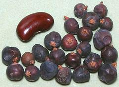 [Juniperus communis and others of family Cupressaceae]
These "berries" are actually the female cones of a type of conifer that
produces cones with fleshy scales that fuse together. The juniper berry
of commerce is spherical and smooth, but the lumpy blue green cones of other
junipers can also be used. Juniper berries are often used with meats,
particularly in Central European recipes. They are also used as a major
flavoring in gin (named after them) and other alcoholic beverages. The
berries should be fairly fresh, because they loose their sweet, resinous
flavor fairly rapidly. The photo specimens were typically 0.313 inch
diameter (8 mm). Juniper berries also have medicinal properties and have
mainly been used as a disinfectant and as a female contraceptive.
Kalonji
- See NigellaKhas Khas
- see Poppy Seeds, WhiteKorarima
[Ethiopian Cardamom, False Cardamom; Aframomum corrorima (Ginger family)]
This is the Cardamom of Ethiopia and Eritrea. Taste is quite similar to the
familiar Green Cardamom to which this plant is closely related, but the fig
shaped pods are much larger, as are the seeds inside. The plant is native to
Tanzania, western Ethiopia, southwestern Sudan and western Uganda. The photo
specimens were about 0.165 inch long.
Details and Cooking.
Licorice
 [Liquorice (UK); Glycyrrhiza glabra (European) |
G. lepidota (American) | G. uralensis
(Chinese) | G. echinata (Russian)]
[Liquorice (UK); Glycyrrhiza glabra (European) |
G. lepidota (American) | G. uralensis
(Chinese) | G. echinata (Russian)]
These plants are used mainly for a flavoring extracted from their roots, which is used in sweets and medicines in the West and as a medicinal in China. This extract is about 50 times as sweet a sucrose. Dried root is used in China and Korea as a recipe ingredient.
American "wild licorice" is less cultivated than the European, but is marketed as a medicinal and as a flavoring. It is often used to sweeten tobacco products.
In excess, licorice can cause high blood pressure and is toxic to the
liver.
Details and Cooking.
Mace - see Nutmeg & Mace.
Mahaleb
 [Bird Cherry: Mahlab, Mahleb (Mid East, Anatolia, Armenia); Mahlepi (Greek);
St Lucie Cherry, Mahaleb Cherry, Prunus mahaleb]
[Bird Cherry: Mahlab, Mahleb (Mid East, Anatolia, Armenia); Mahlepi (Greek);
St Lucie Cherry, Mahaleb Cherry, Prunus mahaleb]
This cherry tree is native from central and southern Europe east to
Pakistan and Kyrgystan and south to Morocco and Lebanon. It produces
small red cherries that are thin fleshed and bitter, eaten mainly by
birds. The cherry pits are broken open to release the kernel which is
used as a spice. it is described as resinous, and tasting like a
combination of cherry and bitter almond. The specimen photo shows seed
kernels 0.2 inch long (5.0 mm), purchased from a market in Los Angeles.
It is more available in powdered form, but that degrades rapidly.
Details and Cooking.
Marati Moggu
[Marathi Moggu, Karer, Shalmali, Semul,Badi Laung, Andhra Moggu, Andhra Mogga; Ceiba pentandra (Mallow family)]
These flower buds are described as a "kind of caper" in many listings, but
they obviously are nothing of the kind, they are flower buds of the Kapok Tree,
a Mallow, not a Mustard. They are used to some extent in Maharashtra, but much
more in Karnataka and Andhra Pradesh farther to the south. This spice is
important in many rice dishes in those states. They are also an ingredient in
masala powders in Chettinad, Tamil Nadu. For details see our
Kapok / Marati Moggu page.
Mustard Seed & Powder
 [Sarson (India - all types); White mustard; Sinapis alba |
Black mustard; Brassica nigra | Brown Mustard;
Brassica juncea]
[Sarson (India - all types); White mustard; Sinapis alba |
Black mustard; Brassica nigra | Brown Mustard;
Brassica juncea]
White Mustard Seed (actually yellow) is the familiar European variety most of which goes into the manufacture of the "prepared mustard" we buy in jars and squeeze bottles. The photo specimens were 0.085 inch diameter.
Black Mustard Seed is always called for in recipes from India and farther east. It is smaller than European yellow mustard seeds but the flavor is pretty similar. The photo specimens were 0.073 inch diameter.
Brown Mustard Seed is used in Russia to make Hot Russian Mustard. It is also grown there to make mustard oil, much used in Russian cooking. This is also a variety much used to grow mustard greens in Russia and Asia.
Mustard Powder is usually made from a blend of white and
brown mustard seeds.
Details and Cooking.
Nag Kesar
 [Nagkesar, Nagkeshar; Cobra's Saffron; Mammea longifolia]
[Nagkesar, Nagkeshar; Cobra's Saffron; Mammea longifolia]
These flower buds are used as a spice in Korkani and Maharashtrian cuisines
in India. It is not a strong spice, but has a slightly woody aroma with a hint
of citrus in the taste. The photo specimens, purchased from an exporter in
India, were about 0.15 inch diameter. 2014 US $9.99 per 100 grams (3-1/2
ounces).
Nigella / Kalonji
[Kalonji (Hindi); Charnushka (Russia, U.S. Armenian); Cörek otu (Turkish); Siyah Daneh (Persian); Kalo Jeera, Kalojira, Black Cumin (Bengali only, otherwise improper), Black Caraway (improper); Onion Seed (improper); Nigella sativa]
This member of the mostly inedible Ranunculales order is native to
South and Southwest Asia. The seeds, which look a bit like the totally
unrelated onion seeds, are used as a spice in India, the Middle East,
Near East, Anatolia, Caucasus, Greece and Egypt. They have a strong,
aromatic and slightly bitter taste. These seeds are often mixed into
Armenian string cheese, scattered on the outside of Nabulsi cheese, and
used on some Jewish baked goods. In India, Nigella (Kalonji) is used as
a regular spice in many curries and other dishes. Nigella is held to
have strong medicinal properties for a number of illnesses. The photo
specimens were typically 0.104 inch long and 0.55 inch across.
Details and Cooking.
Nutmeg & Mace
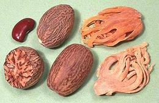 [Umilo, Itshekiri (Nigeria) Myristica fragrans]
Less important than it was in Medieval times, nutmeg is still used in many European recipes, particularly in sauces and beverages, but also in baked goods and with vegetables. Mace is a wrapper around the nutmeg seed which is treated separately. Mace has a lighter, more fruity flavor while nutmeg is sweeter and stronger, so they find application in different kinds of recipes (and sometimes together). The fruit itself is also used in the regions where nutmeg grows. Details and Cooking.
Nutmeg is known to have psychoactive properties, and some nutmeg
relatives in South America have very strong psychoactive properties,
but these are not relevant to a culinary site. Nutmeg is so highly
toxic to some animals, dogs, for instance, that culinary quantities
harmless to people can be deadly.
Pepper Family
[genus Piper]
The Pepper family has well over 1000 species. The largest number are in the Americas, but those of culinary fame are mostly from Africa and South and Southeast Asia. Pepper has been an important cooking spice since the depths of prehistory. Leaves and roots of some species are also used.
For More Information
on these and less familiar Pepper species, see our see our Order Piperales page.
Ashanti Pepper[Mpuru Uziza (Nigeria); West African Pepper, Benin Pepper, False Cubeb, Guinea Cubeb Piper guineense] This plant is native to the tropics of West and Central Africa. Compared
to Cubeb pepper it is smaller, less bitter, and more herbal. It has a
sharpness and flavor similar to black pepper, but much less intense, while
interesting resinous flavors are more pronounced. This pepper was well
known in Europe during Medieval times but its use declined after the
14th century. Production is not high so not much is shipped out of West
Africa and it's relatively expensive even there.
Details and Cooking
Cubeb Pepper[Tailed pepper; Shital chini, Kabab chini (Hindi); Piper cubeba] Unlike many things called "pepper", this one is actually a member of
the Piper genus along with black pepper. This plant is native
to Java in Indonesia and most today is still grown there. It was known
to the ancient Greeks as komakon, a corruption of it's Javanese name,
kumukus. It was popular in Europe until the king of Portugal banned
its sale in favor of black pepper in 1640 and shipments pretty much
ended by 1940. It is still widely used in Indonesia. The taste is herbal
and much like green peppercorns, but it has much less sharpness.
Details and Cooking
Long Pepper - Ethiopian [African Long Pepper; Timiz (Ethiopia); Piper capense]
[African Long Pepper; Timiz (Ethiopia); Piper capense]
This pepper is related to the round black pepper, but is much different
in flavor and hotness, more akin to cloves and cardamom. It produces loose
seed spikes embedded with many tiny peppercorns, each inside a fruit
capsule. The plant is native to most moist regions of Sub-Saharan Africa,
from coast to coast and as far south as South Africa.
Details, Cooking, and Substitute.
Long Pepper - Indian[Long Pepper; Piper longum] This pepper, related to the round black pepper, produces seed spikes
embedded with many poppy seed size peppercorns. These seeds have an
effect similar to black pepper but a bit sharper and more citrusy.
This pepper was very important in Europe from Roman times, but by the
14th century had been largely replaced by black pepper, and then, in
the 16th century was further displaced by dried chilis from the
Americas. This pepper is still used in India, North Africa, Indonesia
and Malaysia. The seed spikes are fairly hard, and need to be ground
for use. Details and Cooking.
Long Pepper Root - Indian[Pipramol, Ganthoda (India); Piper longum] This root is used as both a medicinal and as a culinary spice in India
and parts of China. The taste is earthy, lightly peppery, and slightly
herbal. The root is very hard, so it must be ground for use.
Details and Cooking.
Pepper / Peppercorns - Black, White, Green, Red
[Piper nigrum] Pepper originated on the Malabar (south west) coast of India, but major plantations were later established in Indonesia for trade with the Dutch. It is now grown also in Brazil and several Southeast Asian countries. Pepper has long been used in India and parts of Southeast Asia, particularly before chilis were brought from South America. In Europe it has been the most important spice since the Roman Empire and was extremely expensive until the 18th century due to trade monopolies. In more recent times pepper is affordable and has spread to just about
every cuisine. The photo specimens are: brined Green Peppercorns
(top), force dried Green Peppercorns (right), White
Peppercorns (left) and Black Peppercorns (center).
Details and Cooking.
Voatsiperifery[Madagascar Wild Pepper; Piper borbonense] These pepper fruits are dried and used as a spice called voatsiperifery,
and are described as having an earthy, woody flavor with aromas of citrus
and flowers. Not as strong as Black Pepper, but quite sharp, and the
sharpness is lingering. The photo specimens were about 0.125 inch diameter
(3.2 mm).
|
Peppercorns, Pink
[Schinus terebinthifolius (Brazilian) | Schinus molle (California / Peruvian)]
These "peppercorns" are from trees of the Cashew family
(Anacardiaceae) and are not at all related to the familiar black, green,
red and white peppercorns of Southeast Asia, nor to the Sichuan peppercorns of
China and Nepal. They have long been used as a spice and medicinally in the
Caribbean and some years back were a real rage with the fancy chef set.
During the rage many publications shrilly warned that they were related to
poison ivy and poison sumac, but even more so is the spice "sumac" heavily
used in the Near East. In any case dried berries contain no significant
amount of the suspected irritants. Today they are commonly found mixed with
black, green and white peppercorns in "gourmet" pepper mixes where they
serve a decorative purpose only.
Details and Cooking.
Peppercorns, Sichuan (Szechwan)
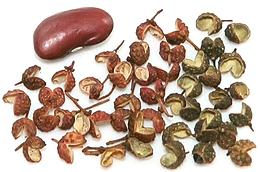
[Flower Pepper, Prickly Ash (English); Teppal (India); Jiao (China) Zanthoxylum bungeanum, Z. simulans, Z. piperitum and others (citrus family)]
Dried seed pods of the Chinese prickly ash tree, the "peppercorns"
essential to the famous Sichuan cuisine of China. Similar seed pods are
important in Japan, the Himalayan region, India and Indonesia, They are
quite unique with a remarkably sharp, citrusy flavor and a numbing
anesthetic effect on the tongue. For details and descriptions of a
number of species, see our
Sichuan Peppercorns page.
Peppercorns, Tasmanian

[Mountain Pepper; Tasmannia lanceolata | also Dorrigo Pepper; Tasmannia stipitata - both of family Winteraceae, order Canellales]
Native to Australia, these "peppercorns" look much like dried black
peppercorns but have a pungency and numbing effect on the tongue
similar to Sichuan peppercorns. Both dried berries and dried leaves
carry the spiciness and both are used in cooking, usually dried and
powdered. This plant is grown commercially in Australia and some is
exported to Japan to be used to flavor wasabe paste (whether real
wasabe or the horseradish paste also called "wasabe" I do not know).
Both leaves and berries also show strong antimicrobial activity and
are high in antioxidants.
Photo by Melburnian distributed under license Creative
Commons
Attribution 3.0 Unported..
Poppy Seeds
[Black Poppy Seed | White Poppy Seed; Khas Khas (India) | Papaver somniferum of order Ranunculales]
There are two kinds of poppy seeds sold in the spice markets, Black and White. They are imperfectly interchangeable due to color, taste and other characteristics. Both come from the infamous opium poppy, but contain only tiny amounts of the psychoactive alkalis morphine and codeine. Those have to be gathered from the sap long before the seeds are mature enough to harvest. Drug tests, however, may come out positive from eating poppy seed rolls, muffins or bagels. Poppy seed is also used as an oil seed, but in North America it's used for slow drying artist's oil paints rather than for cooking. Details and Cooking.
Rampatri
[Rampatri (Hindi); Kattujathikka, Kottappannu, Panampalka, Pathiripoovu, Ponnampannu, Ponnampayin, Ponnampu (Malayalam); Kanage, Doddajajikai (Kannada); Myristica malabarica]
This intensely aromatic spice is from trees native to swampy areas
along the Western Ghats (mountain range) of India, and used in masalas
(spice mixtures) in the region, particularly Karala. The appearance is
much like Mace, but much larger and more dense. The aroma and flavor are
much darker and less fruity than mace. The trees are Red List VU (Vulnerable)
due to draining of the marshes in which they live for agriculture. The
photo specimens, up to 2.4 inches long, were purchased from an export house
in India for 2014 US $9.99 / 50 grams (1-3/4 ounce).
Radhuni
[Wild Celery (not unique); Ajmod (Hindi / Urdu); Trachyspermum roxburghianum alt Carum roxburghianum]
This plant is grown widely in South and Southeast Asia, including
Indonesia. Its highly aromatic seeds are use in curries, and in some
parts of West Bengal and Bangladesh replace mustard seed in the Bengali
spice mix Panch Phoron. It smells similar to parsley seed, but must be
used with considerable discretion as it is very strong and can overpower
a dish. The seeds are generally fried in oil until aromatic and crackling
before adding other ingredients. The herb can also be used fresh and is
reported to be so used in Thailand. The photo specimens, purchased from
an export house in India at US $9.99 / 100 gms (3.5 ounces) were about
0.040 inch diameter.
Saffron
[Crocus sativus]
The only plant in the Iris family of culinary importance, the Saffron Crocus, does not appear in nature - it is sterile, so must have been the result of human intervention. It may have originated in Bronze Age-Crete, but is now harvested as a crop from Spain through India and North Africa. The only part of the plant with culinary use is the stigmas, thread like components of the flower. These are used as a flavoring and coloring in many cuisines. They must be dried, causing chemical changes, before they are effective.
It takes 150 flowers to make 1 gram (0.035 ounce), which is about 1/2 tablespoon of very loosely packed threads. These threads must be carefully harvested by hand. In North America, a single gram can cost between US $2.00 and $16.00, depending on size of the package, grade of saffron, point of origin and what the retailer thinks he can get from his customers. The photo to the left shows 1 gram of Spanish saffron, with our ubiquitous red kidney bean for size comparison. Details and Cooking.
Selim Pepper
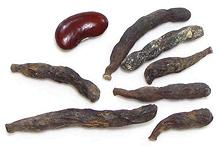 [Grains of Selim, Senegal pepper, Kimba pepper, African pepper, Moor pepper, Negro pepper, Kani pepper, Kili pepper, Ethiopian pepper; Djar (Wolof, Senegal); Poivre de Sénégal (French); Kieng (Cameroon); Hwentea (Ga - Ghana); Chimba (North Ghana); Xylopia aethiopica | Xylopia striata similar but larger - both of family Annonaceae]
This spice is totally unrelated to the Pepper Family (Piperaceae) or
even the Pepper Order (Piperales). It is used for similar
purposes as those peppers, but is much more aromatic. It is native to
much of Sub-Saharan Africa, from Senegal across to Ethiopia, and as
far south as Tanzania, with Ghana the largest producer. It is thought
to have originated in Ethiopia, but is particularly important in
Senegal on the coast of West Africa.
Details and Cooking.
Sesame Seeds
[Ajonjolí, Sésamo (Spanish); Till, Til, Teel (India); Goma, Shima (Japan); Zhi má, Hu má (China); Kunjut, Shushma (Armenia); Ellu (Tamil, Malay); Sesamum indicum of order Lamiales]
This plant is native to both India and Africa, with many wild relatives in both regions. It is now grown through much of the tropics for its seeds, used both as a spice and a source of cooking oil. Burma is the largest producer, but India is the largest exporter, and Japan the largest importer. Sesame is not much grown in the United States due to the labor cost in harvesting, though this is being worked on.
There are thousands of varieties of this plant, producing seeds in many colors, but the most commonly available in North America are White and Black. The brown seeds in the center of the photo are white seeds that have been toasted, a very common way sesame seeds are used. White seeds dominate in India, and black in China and Southeast Asia, so naturally the color used in those regions matches the color grown.
In Europe and North America, sesame seeds are much used as toppings
for baked goods, including hamburger buns (McDonalds buys 75% of Mexico's
crop). In other regions, usage is much more diverse, including many
sweets like halva, and also tahini (like peanut butter, but sesame).
Details and Cooking.
Silphium
[Silphium (Greek); Laser (Roman); possibly related to Ferula tingitana (Parsley Family)]
Silphion was grown in Libia when North Africa was the breadbasket of
the Roman empire, but was rendered extinct by poor agricultural practices
and desertification. While the leaves were sometimes used as an herb and
stalks as a vegetable the main use was for drops of dried resin obtained
by slashing the roots or stalks. This resin was highly prized and very
expensive, but the only similar product available today is
Asafoetida which was considered inferior
when silphion was available. The pictured coin is about the only
authoritative source for what it looked like.
Details and Cooking.
Star Anise
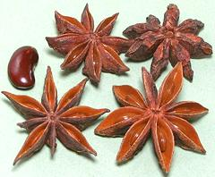 [Bat Gok (China); Badiyan (from Persian, but adopted by other languages); Illicium verum]
An essential for Chinese cooking, this spice is also grown and used in
Vietnam, Laos, Indonesia, and India. These licorice flavored seed pods
grow on a tree native to Vietnam and southern China. The hard seeds which
may be present in the pods can be ground with the pods or discarded -
they lack flavor. Star Anise is almost always sold as whole or broken
pods to be used whole or ground just before use. In the West it is used
as a flavoring in a number of alcoholic beverages. In the early 2000s,
most of the harvest went to processors for extraction of a chemical used
in manufacturing the drug Tamiflu® This tree belongs to the Basal
Angiosperms, a survivor from the earliest days of flowering plants.
Details and Cooking.
Sumac
[Rhus coriaria of family Anacardiaceae (Cashew family)]
This is a very popular, though fairly mild, souring agent widely used in
the Levant and Middle East. It is sold alone, and as a component of herb
mixes, particularly with thyme (Zaatar). It is used in place of lemon in
dry spice mixes, as lemon is not dry. Caution: Don't try to make
this at home. North American Sumac is not the same species and can cause
allergic reactions and poisoning. Sumac is available in just about any
market serving a Levantine or Middle Eastern community.
Details and Cooking.
Teppal
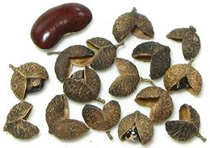 [Tirphul, Tirfal, Tirphal; Zanthoxylum rhetsa (citrus family)]
These are dried fruits of a prickly ash tree native to India. These
"peppercorns" are similar to the famous Sichuan peppercorns of China,
but much larger and greenish rather red. They have a sharp, citrusy
flavor but are much milder than the Sichuan variety, and with a lot
less of then numbing anesthetic effect on the tongue. It is used in
Maharashtra and southern states of India. The photo specimens were
purchased from an exporter in India, 2014 US $9.99 for 100 grams
(3-1/2 ounces). Refer to the page for Sichuan Peppercorns for
Details and Cooking.
Turmeric Powder
[Haldi (India); Curcuma longa | White Turmeric; Curcuma zedoaria (ginger family)]
This powder is ground from steamed and dried turmeric roots. The dried
powder is commonly used in India, and is ground weekly from dried roots
whenever possible. The North American spice trade considers Turmeric nothing
more than a coloring, so the dried powder is likely old with inferior flavor
and no aroma. That found in Indian markets has far better flavor and aroma
because both turnover and expectations are much higher.
Details and Cooking
Vanilla Bean
[Vanilla planifolia, Vanilla pompona, Vanilla tahitiensis]
The dominant vanilla orchid (planifolia) is native to Mexico but has been planted in other tropical areas with Madagascar and Indonesia the largest producers. Another species (tahitiensis) is grown in French Polynesia, but in comparatively minute quantity.
Vanilla beans are long seed pods containing thousands of seeds, but the
seeds are of no importance. The pods are picked green and then killed,
usually by heat or sun drying. They are then fermented for 7 to 10 days
at high temperature and humidity allowing enzymes to convert substances
in the beans into vanillin and something like 200 other flavoring
components. The beans are then dried and sorted by quality.
Photo © i0125.
Wasabe Powder
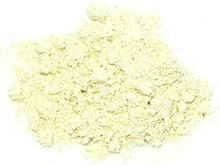 [mostly powdered horseradish B. Armoracia rusticana, not actual wasabe Wasabia japonica]
The one thing you should not expect in "Wasabe Powder", is a detectable amount of wasabe root. It's nearly all powdered horseradish, with a little green coloring - because powdered wasabe root is pretty much worthless (and very expensive). This powder is almost flavorless dry. It is mixed with enough water to make a paste, then allowed to sit for 10 minutes or so until enzymes have produced the pungency. It should be used within an hour or less because the pungency fades rather quickly.
The photo specimen, From Japan, is not as garishly green as
some. It lists as ingredients: Horseradish, Japanese wasabe root,
gardenia. The gardenia is, no doubt, for the green color, and the
wasabe root is probably just enough to list ahead of the gardenia.
These powders can claim to be Wasabe whether or not they contain any
wasabe root, because Wasabe is also the word for horseradish in Japan.
Details and Cooking
Fresh Spices
Horseradish
 [Meerrettich (German), Seiyo Wasabi (Japan) B. Armoracia rusticana]
[Meerrettich (German), Seiyo Wasabi (Japan) B. Armoracia rusticana]
This pungent white fleshed root was known in Roman times, probably
originating in southeastern Europe. Today it is grown worldwide for use
as a condiment, particularly popular in Germany, Poland, Russia and
surrounding countries. Actually, about 85% of the worlds supply is
grown in the bottomlands surrounding Collinsville, Illinois where the
soil is just the way horseradish likes it. A mixture of horseradish,
mustard seeds and green food coloring is used as a condiment in
Japanese restaurants, even in Japan, because real
Wasabi is so costly.
Details and Cooking.
Ginger Family
There is more to the aromatic Ginger family than those listed here, which are the most common, and only the rhizome varieties. Others will be seen scattered through this page. for a comprehensive listing of the spices and herbs of this family see our Gingers page.
Galangal[Greater Galangal, Galanga, Siamese Ginger; Kha (Thai); Laos, Lengkuas, (Indonesia); Rieng (Viet); Alpinia galanga] This is an essential ingredient for Southeast Asian cuisines, particularly those of Thailand and Indonesia. While it looks rather similar to ginger, the flavor is very different, the skin is lighter in color, the inside is white rather than yellow, and its practically wood hard. Galangal is more earthy, with flavors of citrus, pine and camphor. Fresh root is increasingly available in the US, with some now grown
in California and Florida. Dried powder is also available, but fresh
is highly preferred for most uses. It was a commonly used medicinal
in Europe during the 11th and 12th centuries and is still used
medicinally in Asia, as well as having a place in African American
hoodoo magic.
Details and Cooking.
Galangal - Lesser [Sand Ginger, Aromatic Ginger; Kenchur (Indonesia); Cekur (Malay); Sha Jiang
(China (sand ginger)); Kaempferia galanga]
[Sand Ginger, Aromatic Ginger; Kenchur (Indonesia); Cekur (Malay); Sha Jiang
(China (sand ginger)); Kaempferia galanga]
K. galanga is a stemless plant originating in southern India, but no longer used in Indian cuisine. It is used for cooking in Malaysia and Indonesia, particularly Java and Bali. Outside this region it is known only as a medicinal, though a little is used in Sichuan in dried form. Unlike all the other galangals, K. galanga rhizomes are dark
and reddish in color. The photo specimens of K. galanga were
purchased at a Los Angeles Asian market labeled "Sand Ginger". The
nodules ranged from 3/4 inch to 1-1/8 inch diameter. The texture and
flavor are very similar to Krachai
with a faint hint of licorice. More widely available Krachai makes
a suitable culinary substitute.
Ginger[Khing (Thai); Saenggang (Korea); Inji (Tamil, Malaysian); Aadu (Gujarati), Alay (Marathi); Adrak (Hindi, Urdu); Zanjabil (Arabic); Zingiber officinale] Originally from South or Southeast Asia, ginger is far and away
the most used of the Zingiberaceae family rhizomes. The top ten
producers ship more than a million and a half tons (US) annually, with
India, China and Indonesia the major producers. Nigeria is the only
major producer outside Asia. Available fresh, dried and ground, ginger
is now important in every major cuisine worldwide. The photo specimen
was 7-1/2 inches long and weighed 12 ounces, a small part of a ginger
"reef". Reefs can easily exceed 30 pounds.
Details and Cooking
Ginger - Young[Stem ginger, Green ginger, Pink ginger, New ginger, Spring ginger, Zingiber officinale] This is regular ginger when new sections of rhizome have formed and
sprouted leaf stems. It is juicier and much milder than older ginger
and has a tender skin that is generally not peeled. It is seasonal so not
always available. Ginger in this state of growth is often pickled,
particularly in Southeastern India. It is often called for in Southeast
Asian recipes.
Details and Cooking.
Krachai[Kra chai, Kachai, Chee-puu, Poh-see (Thai); Fingerroot, Chinese ginger, Chinese keys, Lesser ginger (English); Temu kunci (Indonesia); Gieng rung (Viet); Kaempferia pandurata alt. Boesenbergia pandurata, B. rotunda] Originating in Southeast Asia and Southern China, this plant grows from rhizomes that have the form of a cluster of long fingers. It is not much available fresh outside Thailand, but it is available in Asian markets frozen or put up in jars of brine. Both forms are quite acceptable for use. It is also available in tiny jars as dried powder and as bags of dried strips, but dried is more bitter and less flavorful than frozen or brined. Krachai is sometimes wrongly labeled "lesser galangal", a very different plant. Krachai is used mainly in Thailand though some is used in Vietnam,
Malaysia and Indonesia. Outside those regions it is almost unknown
except dried as a medicinal in China. The flavor is milder and much
more earthy than ginger or galangal. It is most often used in fish
dishes but also with beef and rice or as a general aromatic vegetable.
The photo specimen in the front was 3-7/8 inches long and 0.52 inch
diameter at the big end. These were brined.
Details and Cooking.
Mango Ginger[Ama Haldi (india), Am Haldi (West Bengal), Amba Haldi, Curcuma mangga] Native to Eastern and Southern India and related to turmeric, rhizomes of this plant are similar to ginger but have a distinctly mango flavor. They are most used in pickles in Southern India. I have seen sites listing "mango ginger" as an alternate name for turmeric but this is not correct. Myoga Ginger [Zingiber mioga]
[Zingiber mioga]
The shoots and flower buds of this ginger plant are used in Japan and
are now grown in Australia and New Zealand for export to Japan. The buds,
which are fairly mild, are generally shredded very fine and used as
toppings and garnishes, particularly for yakko (chilled tofu), miso soup
and sunomono (vinegared salad).
Photo by Avenafatua distributed under license
Creative Commons
Attribution ShareAlike v2.5 Generic.
Torch Ginger [Wax Flower, Red Ginger Lily, Porcelain Rose; Kaalaa (Thai); Bunga Kantan
(Malay); Bunga kecombrang, honje, Asam cekala (Indonesia); Xiang Bao Jiaing
(China); Etingera elatior]
[Wax Flower, Red Ginger Lily, Porcelain Rose; Kaalaa (Thai); Bunga Kantan
(Malay); Bunga kecombrang, honje, Asam cekala (Indonesia); Xiang Bao Jiaing
(China); Etingera elatior]
The shoots and buds of this rather striking flower are used as an herbal
spice in Southeast Asia. The sweet and sour seed pods are also used as well
as the black seeds, particularly by the Karo people of Sumatra.
Photo by Geni distributed under license
Creative Commons
Attribution-ShareAlike 2.5 Generic.
Turmeric[Haldi (India); Curcuma longa | White Turmeric; Curcuma zedoaria (ginger family)] Described as "The true spice of India", Turmeric is a relative of Ginger. It is most familiar in North America as a finely ground orange powder, but fresh and whole dried roots are also available in Indian and Southeast Asian markets. The fresh root is preferred in SE Asia. Shown are fresh root, dried root, powder, and our ever present dried red kidney bean for scale. Details and Cooking. White Turmeric (Zedoary) is also available as fresh root and is used particularly in Southeast Asia as an aromatic vegetable, and in India it is grated and added to various pickles. It has little color but a considerably sharper taste than yellow turmeric. Details and Cooking. Turmeric has long been a medicinal, including Zedoary in Europe. Today it is getting a lot of research attention in the medical community due to containing a powerful anti-cancer element (curcumin) and as a treatment for other diseases. |
Wasabi
[Japanese Horseradish; Wasabia japonica]
This very pungent green fleshed root is used grated as a condiment, particularly to accompany sushi. Most sushi lovers, however, have never tasted wasabi. Pretty much all sushi bars in the US and nearly all in Japan serve a fake wasabi made from Horseradish, mustard seeds and green food coloring. Real wasabi (hon-wasabi) has a more refined hotness, a sweet after-taste and is not nearly so bright a green as the fake. It's also very expensive and the flavor is extremely perishable.
Imported "wasabi" purchased as tiny cans of dried powder or tubes of paste is all faked up from horseradish. The Japanese can export horseradish under the name "wasabi" because the Japanese name for horseradish is "seiyo wasabi" (Western wasabi). They can even call it "real wasabi".
Real fresh Wasabe and Wasabe products are available from several
growers in the U.S. and Canada. For details and suppliers see our
Wasabe page.
Photo "borrowed" from
Pacific Coast Wasabi.
Health Considerations
In general, the quantity of spices used in everyday cooking is not sufficient to have either a positive or negative effect on health. On the other hand, extracts of many spices are highly medicinal, and a few are toxic. Some spices, particularly nutmeg, which are harmless to people can be deadly to dogs, cats and other animals.
Links
- A1 - Spice / Herb encyclopedia - Gernot Katzer's Spice Pages.